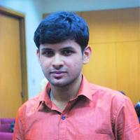

Our Story
Science is not only a disciple of reason but, also, one of romance and passion.
— Stephen Hawking
At Grad School Digest, our goal is simple: to share our love for science with the rest of the world. We realize that scientific language is intimidating (even for us), so we wanted to create a platform where graduate students conducting scientific research can discuss various topics in medical science in a language that is friendly to a wide variety of audiences. As research-based graduate students at the University of Toronto, we are inherently curious and passionate about what we do, and we hope to foster excitement and curiosity about all things science, research, and much more through our blog.
We hope you learn a cool thing or two about science here at Grad School Digest!

SAYAN NAG
Creator, Admin, Content Writer, Designer & Developer
Sayan is a PhD student in the Department of Medical Biophysics at the University of Toronto.
His research interests include image processing, computer vision, deep learning, computational
neuroscience and artificial intelligence.
He is currently developing computational models for effective
brain connectivity using fMRI data.
His hobbies include coding, painting/sketching, playing soccer, cricket
and volleyball. He likes DC comics, rock music, dark comedy and studio ghibli movies - in no particular order.
sayan [DOT] nag [AT] mail [DOT] utoronto [DOT] ca
JENNA PARK
Creator, Admin, Editor, Content Writer
Jenna is an MSc student in the Department of Medical Biophysics at the University of Toronto.
She studies why and how paediatric cancers (such as neuroblastoma) metastasize to different parts
of the body, which can help identify novel therapeutics to prevent their spread.
She is passionate
about all things science, food, and volleyball and hopes to one day see each and every inch of the world.
jjenna [DOT] park [AT] mail [DOT] utoronto [DOT] ca
KATE MACDONALD
Admin, Content Writer
Kate is a PhD student in the Department of Medical Biophysics at the University of Toronto.
She studies how cells respond to different kinds of DNA damage, which can help us understand
the long-term effects of chemotherapeutic drugs.
She has previously written for Let's Talk Science,
and loves to write and talk about all things cell biology.
katemichelle [DOT] macdonald [AT] mail [DOT] utoronto [DOT] ca
BRIAN NGHIEM
Admin, Content Writer
Brian Nghiem is pursuing a MSc degree in the Department of Medical Biophysics at U of T.
His research interests include MR neuroimaging and deep learning approaches to image processing.
Outside of research, Brian has maintained a life-long love for music. In addition to occasional
on-campus performances, he was previously a piano instructor with the Musical Minds Community
Outreach program and the assistant director of the U of T Innis College Choir.
brian [DOT] nghiem [AT] mail [DOT] utoronto [DOT] ca
CATHY ONG-LY
Admin, Content Writer
Cathy is a MSc student in the Department of Medical Biophysics at the University of Toronto.
She is working on using artificial intelligence to develop a biomarker for risk-stratification
of patients for cardiovascular intervention. Her interests are cardiovascular disease, artificial
intelligence, and fitness.
cathy [DOT] ongly [AT] mail [DOT] utoronto [DOT] ca

MEGAN DEWEERD
Admin, Content Writer
Megan is currently an MSc candidate in the Department of Medical Biophysics at the University of Toronto.
Her research in Dr. Robert Rottapel’s lab focuses on high-grade serous ovarian cancer (HGSOC);
almost every patient with this disease has a mutation in the same gene, known as TP53. Using a combination
of analyses at the gene, RNA, and protein levels, Megan hopes to uncover cellular pathways that are reprogrammed
by these mutations, which may lead to new therapeutic targets for ovarian cancer treatment.
Outside the lab, Megan enjoys baking, reading, and hiking.
megan [DOT] deweerd [AT] mail [DOT] utoronto [DOT] ca
MICHAL KAZMIERSKI
Admin, Content Writer
Michal is a PhD student in the Department of Medical Biophysics at University of Toronto.
He studies how machine learning can be used to better understand complex clinical datasets—including imaging,
health records and genomics—and help doctors choose the best personalized treatment for each cancer patient.
Outside of work, he enjoys programming (and breaking) computers and good sci-fi novels.
michal [DOT] kazmierski [AT] mail [DOT] utoronto [DOT] ca
SHALINI BAHL
Content Writer
Shalini is an MSc student in the Department of Medical Biophysics at the University of Toronto.
She studies how chromatin accessibility changes in glioblastoma and breast cancer post-chemotherapy
and at relapse. Her goal is to identify subpopulations of cells that lead to resistance and develop new
therapeutic approaches for preventing tumour recurrence in these patients. Outside the lab, Shalini can be found
hiking and baking.
shal [DOT] bahl [AT] mail [DOT] utoronto [DOT] ca
MATT ROZAK
Content Writer
Matt is a MSc student in the Department of Medical Biophysics at the University of Toronto.
He is working on conducting high throughput analysis of two-photon microscopy images. Outside of his
studies Matt can be found baking, running, and traveling.
matthew [DOT] rozak [AT] mail [DOT] utoronto [DOT] ca
LABEEB TALUKDER
Content Writer
Labeeb is an MSc student in the Department of Medical Biophysics at the University of Toronto.
He studies machine learning and how it can be used as an analysis tool for fMRI data. His goal is to
both model and decode brain activity in response to visual stimuli. Outside of his passion for
for neuroscience and all things related, he can be found in the gym, biking, sight-seeing,
or enjoying coffee.
labeeb [DOT] talukder [AT] mail [DOT] utoronto [DOT] ca
JACOB SCHULMAN
Content Writer
Jacob is a first-year master’s student in the Department of Medical Biophysics at the University
of Toronto, where he also received his undergraduate education in neurobiology and chemistry. Prior to his graduate work, his research
experience (and interest) has spanned the intricacies of biological chemistry kinetics to DTI tractography/diffusivity analysis in
paediatric Obsessive-Compulsive Disorder. Currently, he is working on novel methods of measuring perfusion in the brain with
Dr. Uludag at UHN. Outside of academia, he is a passionate singer/songwriter and guitarist, teacher and tutor, CrossFit
enthusiast, and camp volunteer.